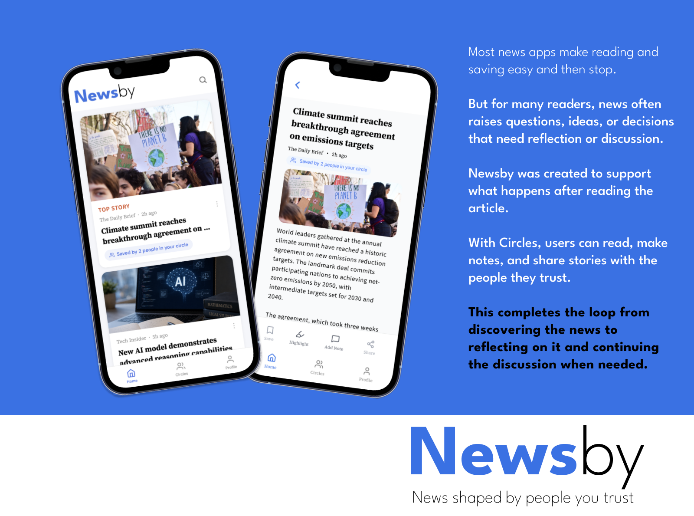
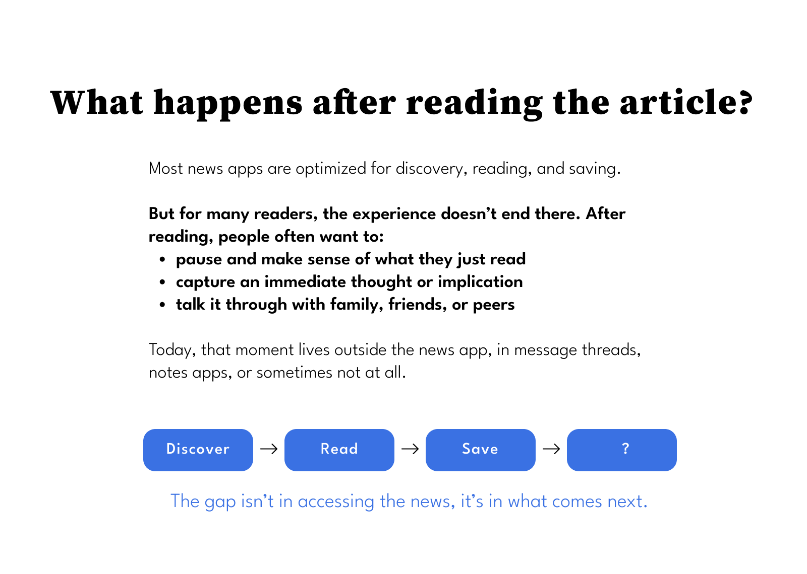
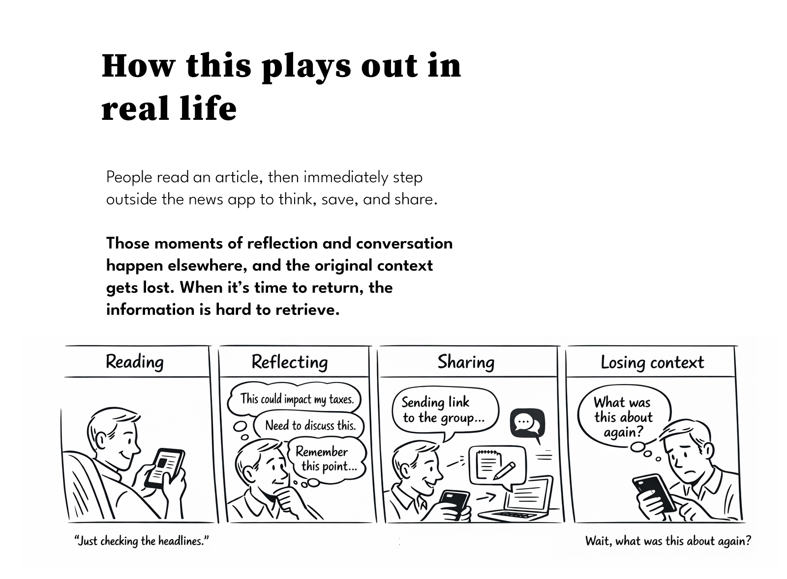
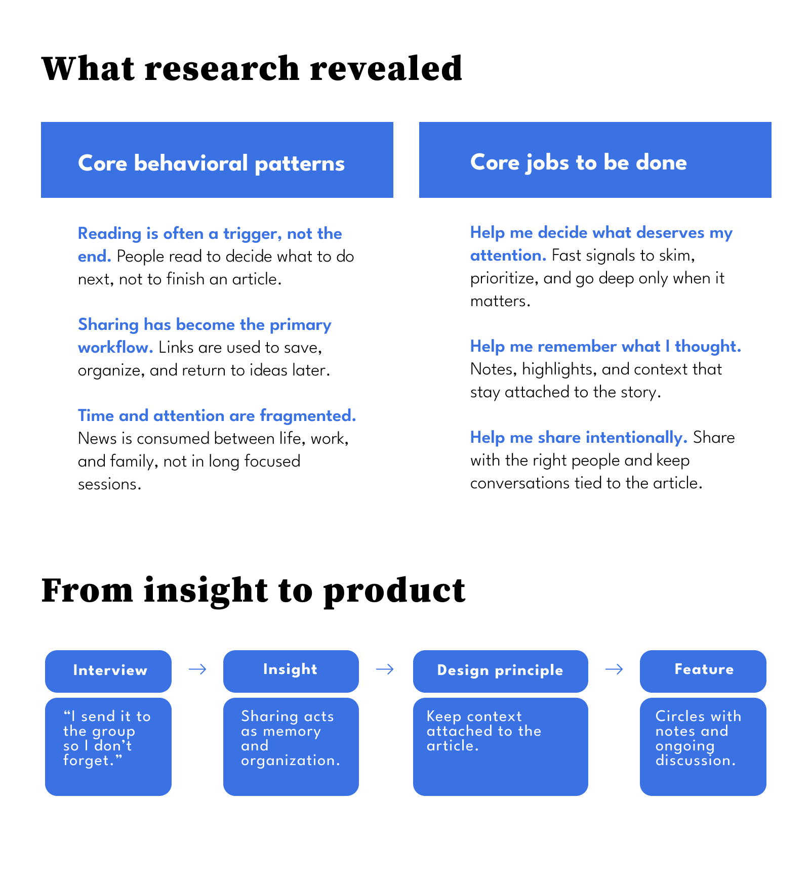
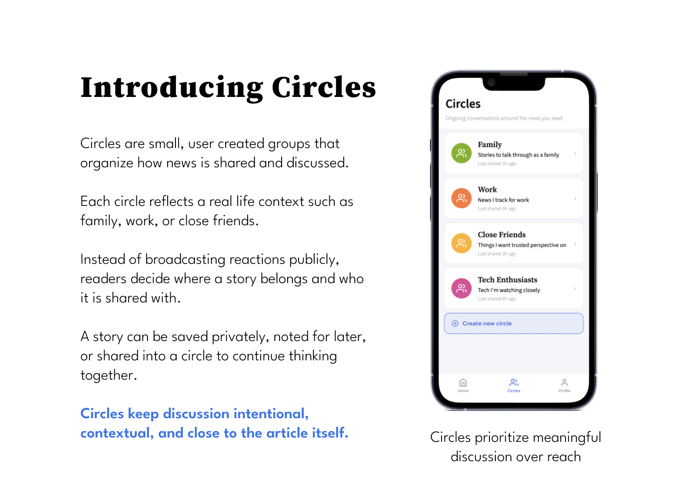
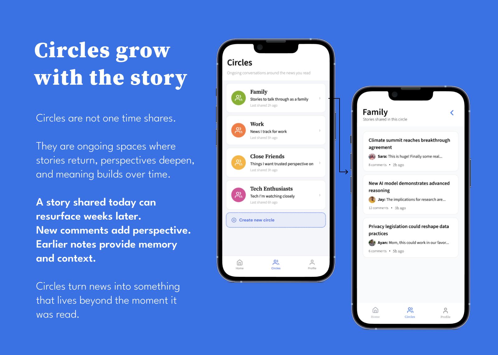
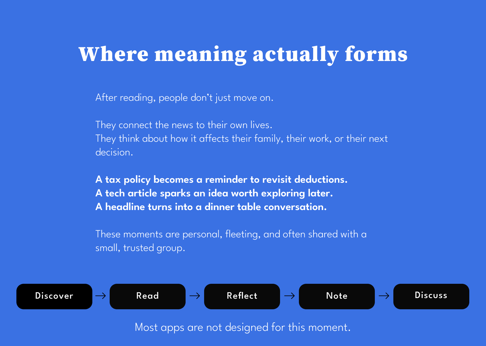
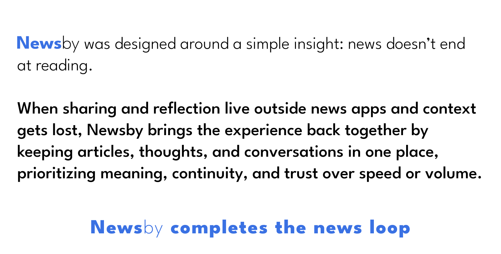

Redesigning how people engage with news after reading, surfacing reflection, conversation, and meaning through a feature called Circles.




News is shared with intention, not for visibility.
What matters is who a story is for, not how far it travels.
The interface creates space to pause and reflect before responding.
No likes. No counters. No performance pressure.
Discussion happens in small, trusted groups shaped by real relationships.
Meaning comes from shared context, not public opinion.
Notes and discussion live alongside the article itself.
Nothing is separated from what sparked the thought.



